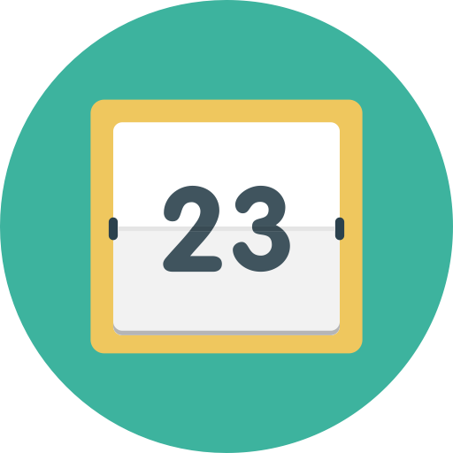
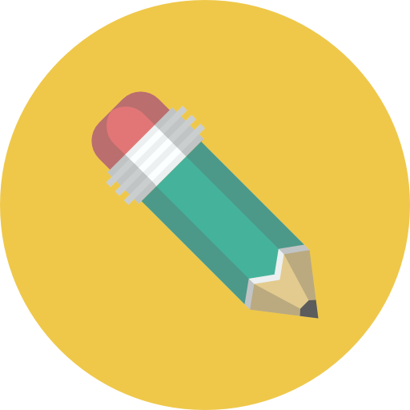

Välkommen till Medieteknik
Hej!
Vad roligt att du ska börja läsa Medieteknik på KTH. Vi på Sektionen för Medieteknik vill välkomna dig till programmet på bästa sätt och det gör vi med Mottagningen. Mottagningen anordnas av äldre studenter på sektionen tillsammans med Tekniska Högskolans Studentkår (THS) och finns för att du ska få en så bra start på dina högskolestudier som möjligt. Mottagningen ger dig en möjlighet att lära känna både dina klasskamrater och äldre studenter, samt lära dig en massa om både sektionen och skolan, under en mängd roliga aktiviteter.
Alla mottagningsaktiviteter är helt frivilliga men se till att du inte missar uppropet den 16e augusti för det är då allt börjar. Glöm inte att ta med legitimation! Om du inte har möjlighet att vara med under uppropet och vill ansluta senare, eller om du har några frågor, kan du höra av dig till oss på oph@medieteknik.com så hjälper vi dig.
På den här sidan kan du redan nu se schemat för Mottagningens första aktiviteter och så småningom kommer du även kunna hitta bilder, filmer och mycket mer skoj.
Medietekniks mottagning åtar sig att följa de restriktioner som Folkhälsomyndigheten, Kungliga Tekniska Högskolan och Tekniska Högskolans Studentkår har satt upp för att minska smittspridningen av covid-19. Dessa restriktioner innefattar maxgränser på antal personer i de lokaler som kommer användas, utspridning av stora grupper, aktiviteter som anpassas för att inte behöva komma i närkontakt med varandra samt ordentlig utrustning för god hygien (speciellt vid matlagning).
Vi tar ansvar för att anpassa mottagningens aktiviteter från vårt håll. Vi ber dig ta ansvar för din egen hälsa och stanna hemma vid symptom, ta hand om dig.
Ha en fortsatt trevlig sommar, vi ser fram emot att träffa dig!
Hälsningar,
Amalia, Olli och Kraft
Mottagningsansvariga
Vad roligt att du ska börja läsa Medieteknik på KTH. Vi på Sektionen för Medieteknik vill välkomna dig till programmet på bästa sätt och det gör vi med Mottagningen. Mottagningen anordnas av äldre studenter på sektionen tillsammans med Tekniska Högskolans Studentkår (THS) och finns för att du ska få en så bra start på dina högskolestudier som möjligt. Mottagningen ger dig en möjlighet att lära känna både dina klasskamrater och äldre studenter, samt lära dig en massa om både sektionen och skolan, under en mängd roliga aktiviteter.
Alla mottagningsaktiviteter är helt frivilliga men se till att du inte missar uppropet den 16e augusti för det är då allt börjar. Glöm inte att ta med legitimation! Om du inte har möjlighet att vara med under uppropet och vill ansluta senare, eller om du har några frågor, kan du höra av dig till oss på oph@medieteknik.com så hjälper vi dig.
På den här sidan kan du redan nu se schemat för Mottagningens första aktiviteter och så småningom kommer du även kunna hitta bilder, filmer och mycket mer skoj.
Medietekniks mottagning åtar sig att följa de restriktioner som Folkhälsomyndigheten, Kungliga Tekniska Högskolan och Tekniska Högskolans Studentkår har satt upp för att minska smittspridningen av covid-19. Dessa restriktioner innefattar maxgränser på antal personer i de lokaler som kommer användas, utspridning av stora grupper, aktiviteter som anpassas för att inte behöva komma i närkontakt med varandra samt ordentlig utrustning för god hygien (speciellt vid matlagning).
Vi tar ansvar för att anpassa mottagningens aktiviteter från vårt håll. Vi ber dig ta ansvar för din egen hälsa och stanna hemma vid symptom, ta hand om dig.
Ha en fortsatt trevlig sommar, vi ser fram emot att träffa dig!
Hälsningar,
Amalia, Olli och Kraft
Mottagningsansvariga

Håll dig uppdaterad
Självklart vill vi att du ska kunna vara med på så många mottagningsaktiviteter som möjligt. Därför får du redan nu tillgång till det preliminära schemat för att kunna planera inför din start på KTH.
Tänk på att alla datum inte är helt satta och kalendern kan komma att uppdateras.
Tänk på att alla datum inte är helt satta och kalendern kan komma att uppdateras.

Har du några frågor?
Sitt inte där och undra! Vi svarar på alla frågor och funderingar du har som rör mottagningen och dess schema.
Skicka ett mail till oph@medieteknik.com!
Skicka ett mail till oph@medieteknik.com!